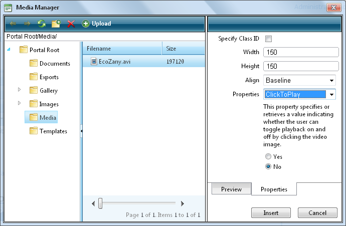

Inserting Media
How to insert media (such as sound and movie files) using the DotNetNuke.RadEditorProvider for the RTE.
- Click the Insert Media button and select Media Manager from the drop down list. This will open the Media Manager.
- Navigate to and select the required media. See "Using the Resource Manager"
- Optional. Click the Properties tab and set the properties.
- At Specify Class ID, select from these options:
- Mark
 the check box to set a class for this media. This reveals the Class ID text box.
the check box to set a class for this media. This reveals the Class ID text box.
- In the Class ID text box, enter the name of the CSS class to be applied to this Flash.
- Unmark
 the check box at Specify Class ID to hide the Class ID field and ensure all other fields can be set.
the check box at Specify Class ID to hide the Class ID field and ensure all other fields can be set.
- Unmark the check box to use the default class.
- In the Width text box, enter the pixel value to set the media width. Leave blank to use the actual media size.
- In the Height text box, enter the pixel value to set the media height. Leave blank to use the actual media size.
- At Align, select the alignment.
- At Properties select a property to view more information on that property and select Yes or No as required. Repeat for each property as required.
- Click the Insert button.
Tip: You cannot edit the properties of media once it has been inserted. To modify media, simply delete it and reinsert it with the required properties.

The Media Manager